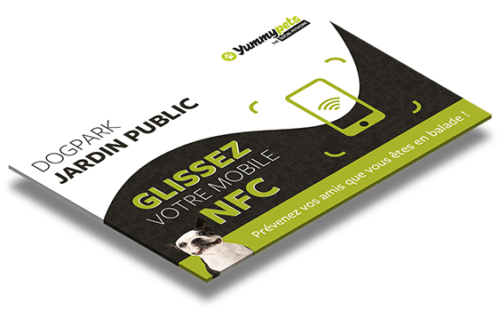

Learn, discover and share:
Be tagging the plate, the pet owner can obtain information on the place, check out the reviews and the overall rating of this place and geo-locate himself via the application to invite his friends to join him. Finally, the owner is informed of the disappearance of animals in the area.
Help cities improve their services to satisfy citizens:
The city can collect qualitative data to optimize its services. It will for example be able to know the most frequented public places by pet owners, rush hours, the number of pet passing...

Sort relevant data and transmit it to organizations:
Organizations will have access to relevant data that can help determine where the lost animals are found, the average distance traveled by a lost animal based on its breed, age ...